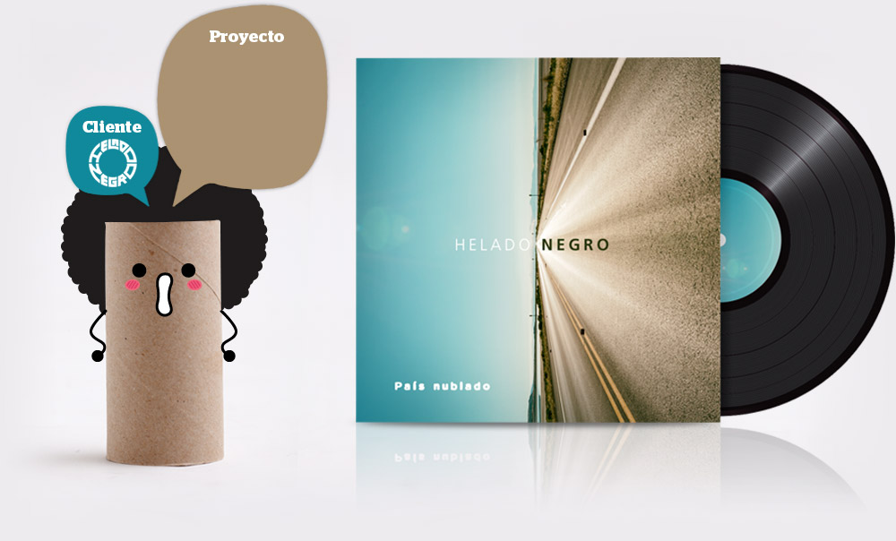
¿Quién, sino Helado Negro, podría utilizar la foto de un día radiante para ilustrar un single llamado País Nublado?
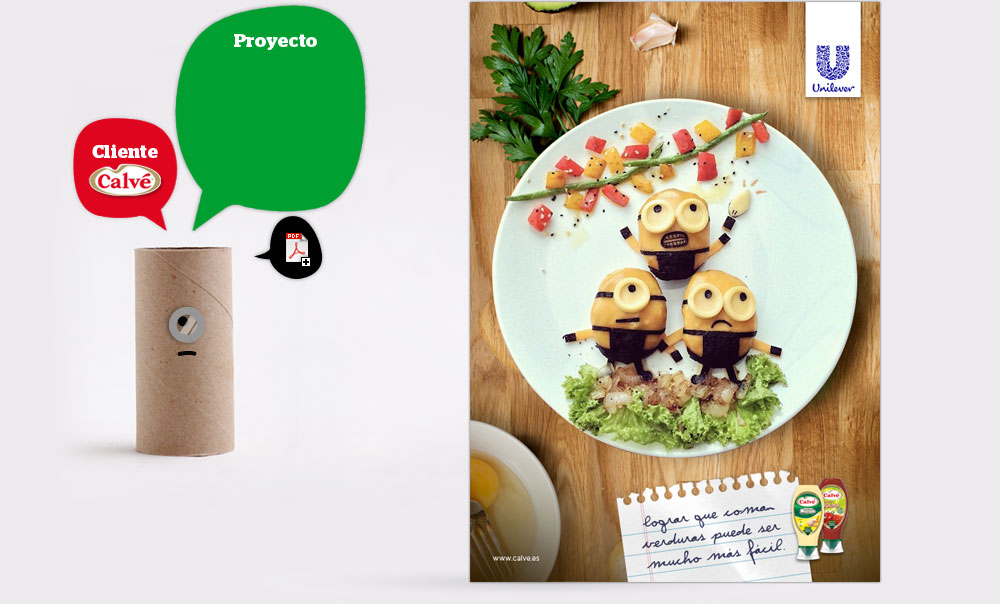
Anuncio de prensa
Nuestro target eran las madres. Y todo el mundo sabe que una madre haría qualquier cosa por sus hijos. Pero también les gusta tener... tiempo libre.
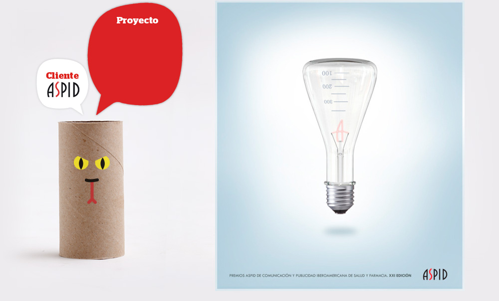
Poster
Cada año los premios de publicidad iberoamericana de salud y farmacia convocan un concurso para escoger la que será su imagen oficial. Y con esta propuesta gané la edición de 2016/2017.
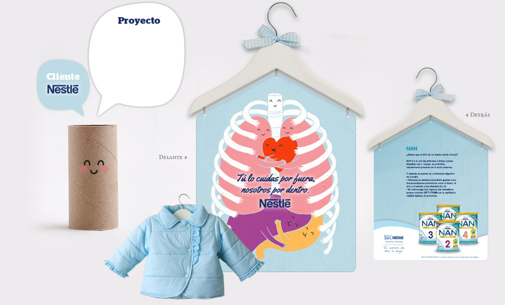
Anuncio supermercado
El brief era "Anunciar Nan en supermercados". Y la idea se explica por si misma; sorprender a las madres cuando compraran ropita para sus hijos. De momento sólo es un simple esbozo.
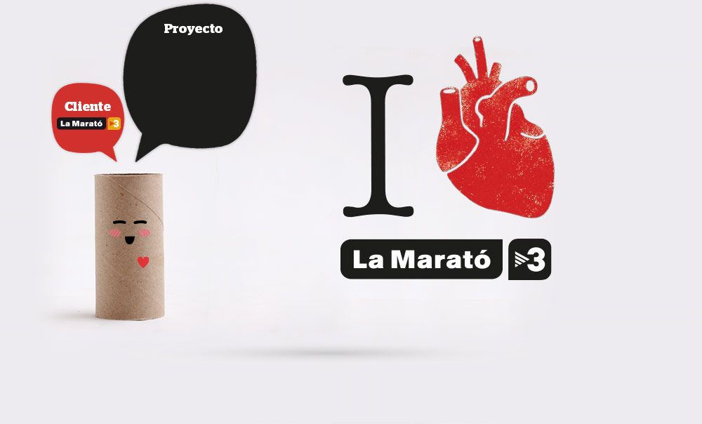
Key Visual / Logo
"I love La Marató", Key visual para La Marató de TV3. Este año dedicado a las enfermedades del corazón. Con Boris Puyana como dupla y Manu Cárdenas como director creativo.
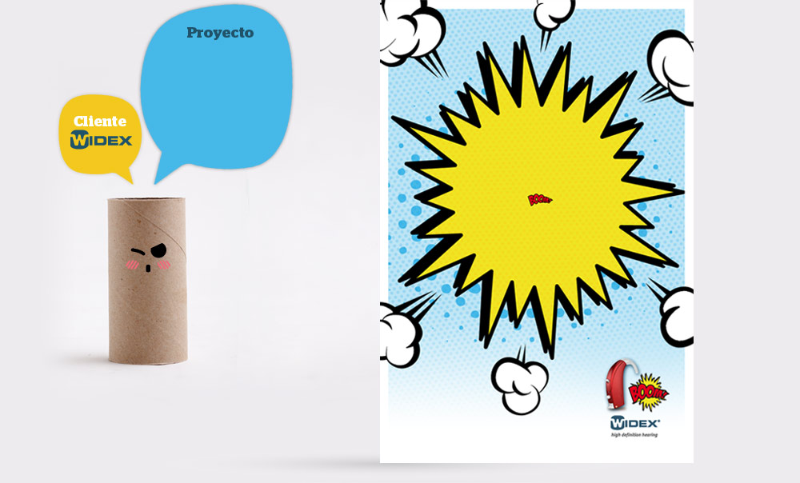
Anuncio de prensa
Widex es un fabricante de audífonos. Esta pieza estaba pensada para anunciar una nueva gama de coloridos sonotones para adolescentes.
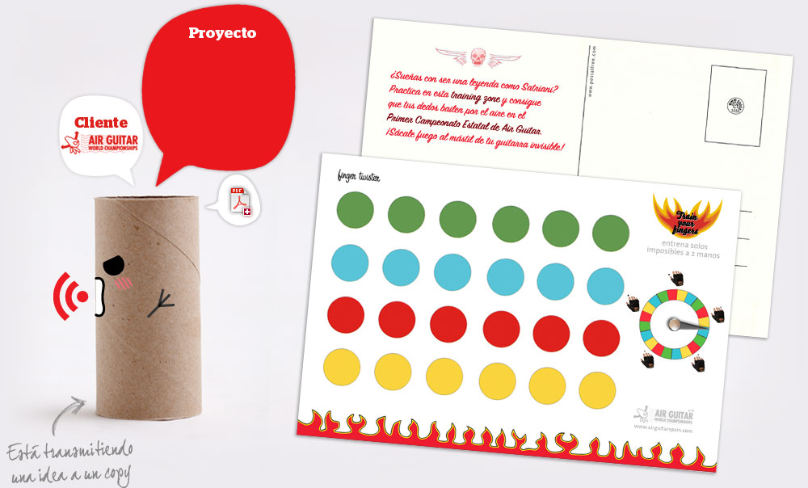
Postalfree
Campaña que consta de tres postalfree interactivas (ver PDF adjunto) pensadas a modo de zonas de entrenamiento para prepararse para participar en el pròximo campeonato de Air Guitar.
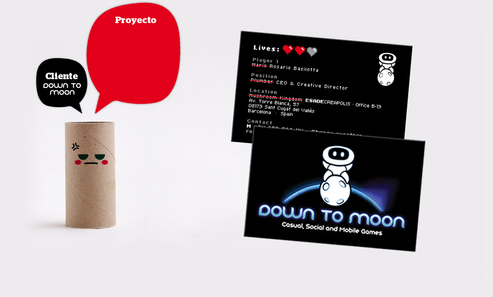
Tarjetas de visita
¡Ok! ¡Basta ya de jugar! ¿Que sucede cuando el propietaro de una empresa de videojuegos se pone a trabajar? ¡Pues estas tarjetas! También había versiones de Lara y Guybrush.
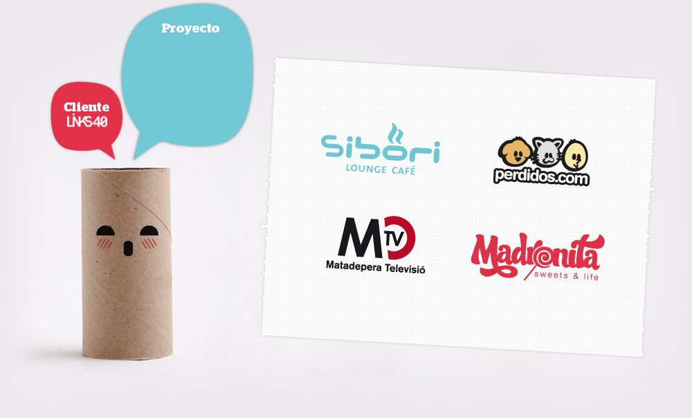
Logotipos
Algunos de los logotipos que hice en Links40, empresa donde crecí como profesional.
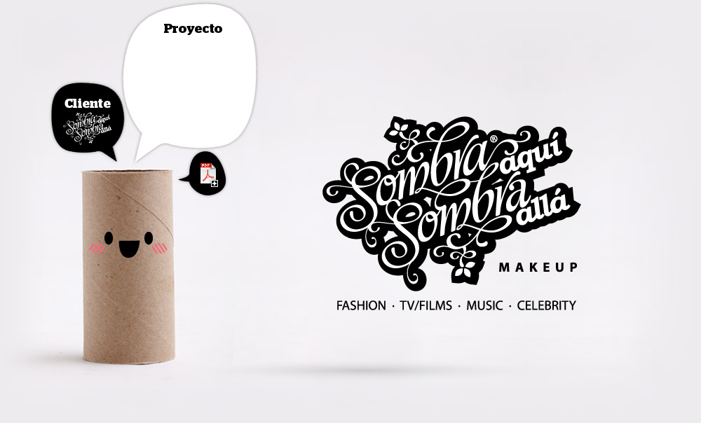
Naming · Logo · Papeleria
Aquí el cliente era una maquilladora y diseñadora de moda de MAC. Me dió carta blanca para hacer lo que quisiera.
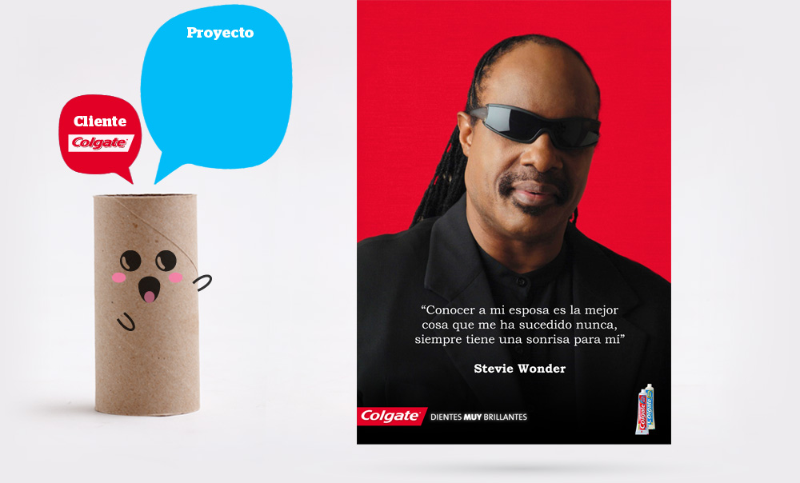
Anuncio de prensa
¡Campaña para comunicar el efecto blanqueador del nuevo Colgate Max White! Constaba de 2 follow ups más, protagonizados por José Feliciano y Ray Charles.
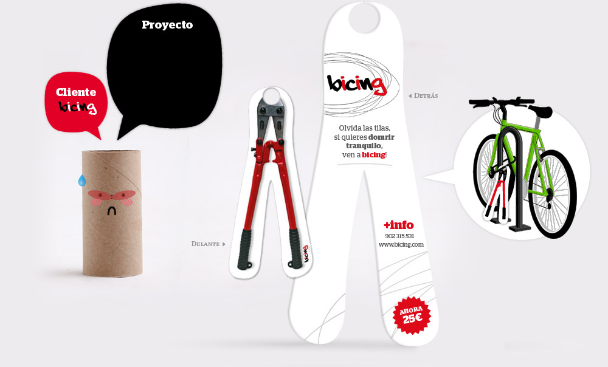
Ambient marketing
Display de cartón para anunciar el servicio de préstamo de bicicletas del Ayuntamiento de Barcelona. En esta acción se ponían cizallas en los candados de bicicletas aparcadas en la vía pública.
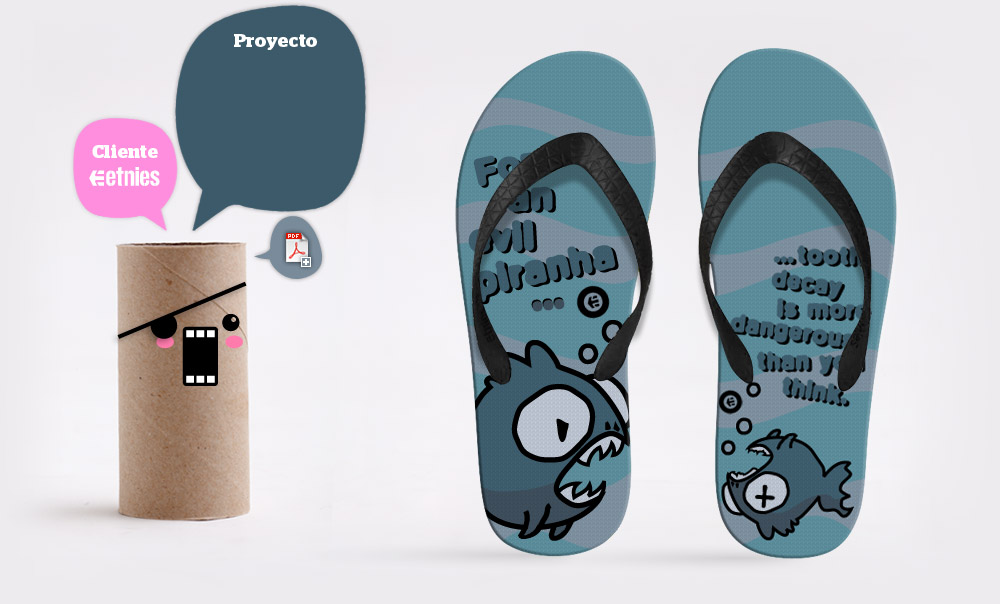
Diseño de chancletas
Tres propuestas diferentes (ver PDF) para El-Jefe Sandal Design Contest. En los copys se puede leer "Para una malvada piraña... la cáries es más peligrosa de lo que parece".
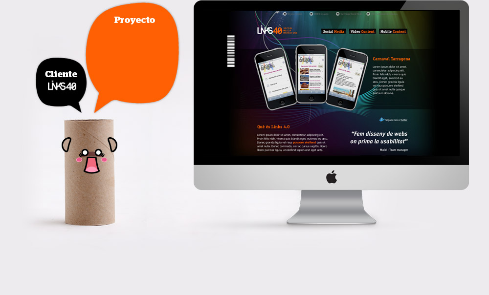
Website
Web hecha formando parte de Links40, cuando era el encargado de diseño de ahí.
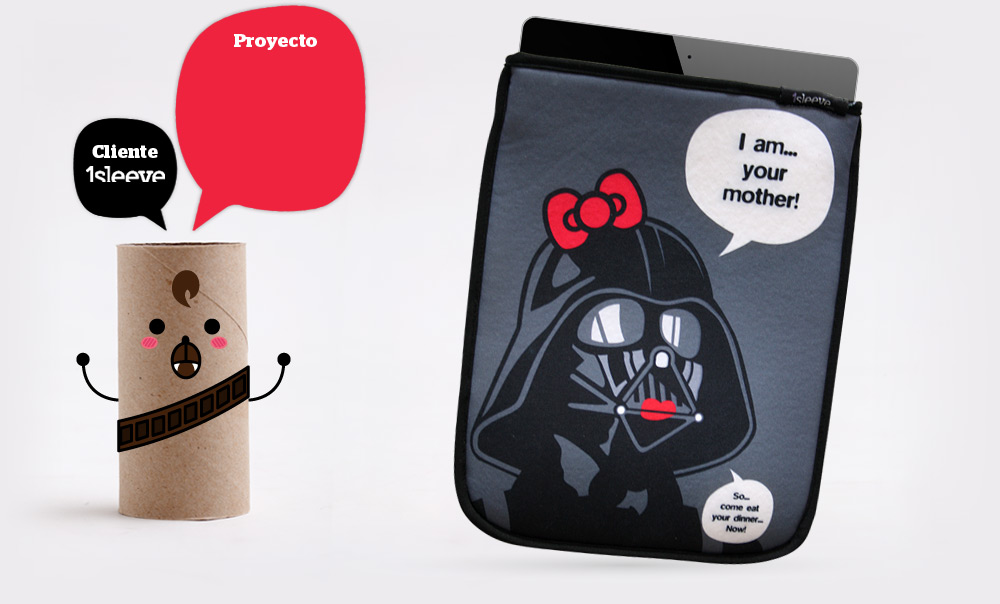
Funda para iPad
1Sleeve es una empresa catalana que se dedica a la venta de fundas personalizadas para iPad. Querían una idea/diseño para la primera hornada de fundas y... salió esto.